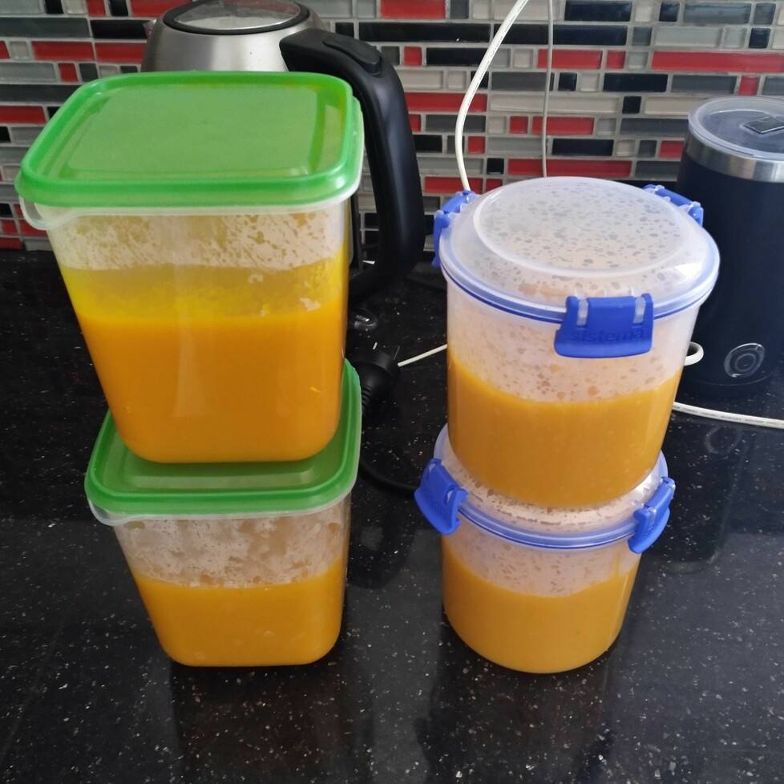

Pumpkin Soup
 Meat
Meat
Tasty entree and great for babies.

2tomatoes1 largeonion
Place tomatoes (halved) and onion (quartered) into food processor bowl and process until finely chopped.
1.5kgpumpkin5 cupswater5 cubeschicken stock
Combine pumpkin, tomato and onion mixture with water, chicken stock in a pan.
pinchsaltsomecayenne pepper
Optionally, add salt and cayenne pepper.
Simmer gently until pumpkin is tender approx >0 mins.
Puree pumpkin mixture until smooth in food processor.
Serve soup sprinkled with parsley and greek yoghurt.